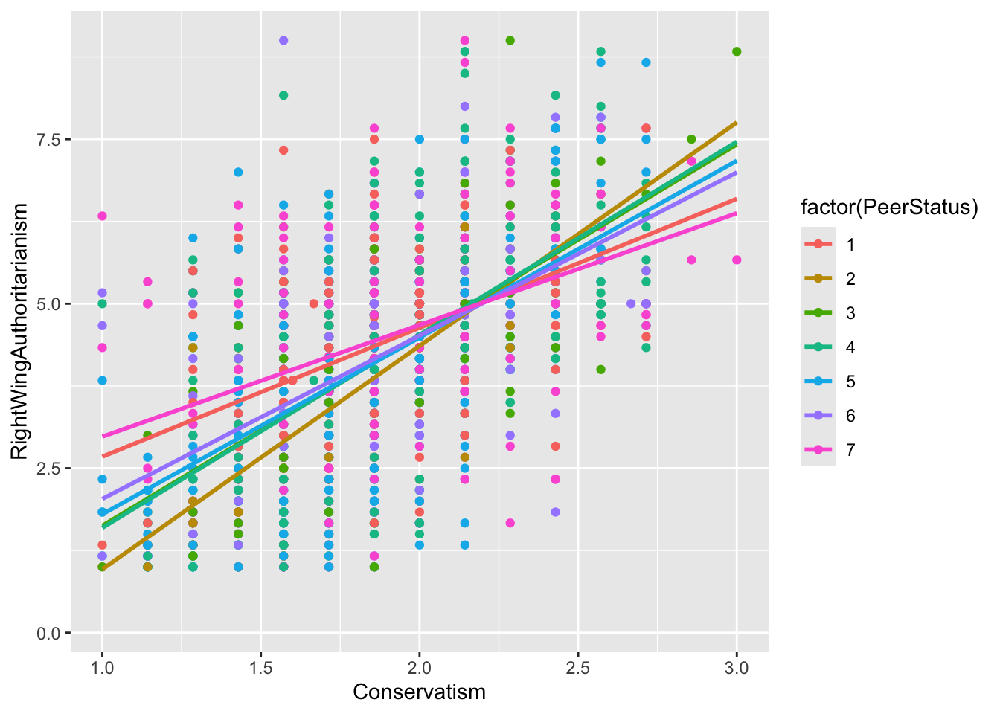
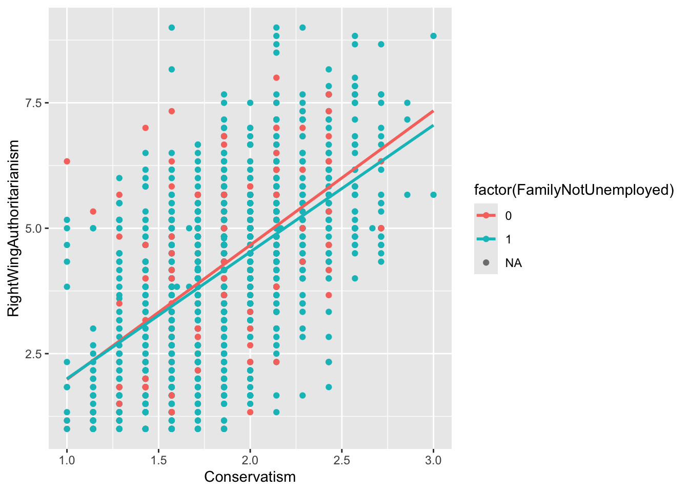
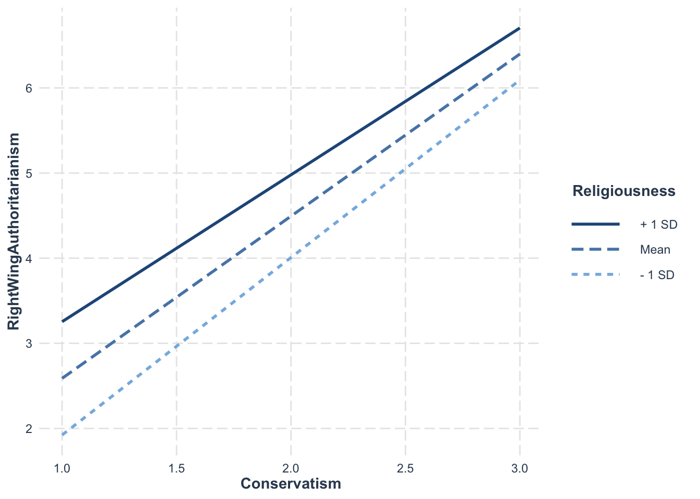
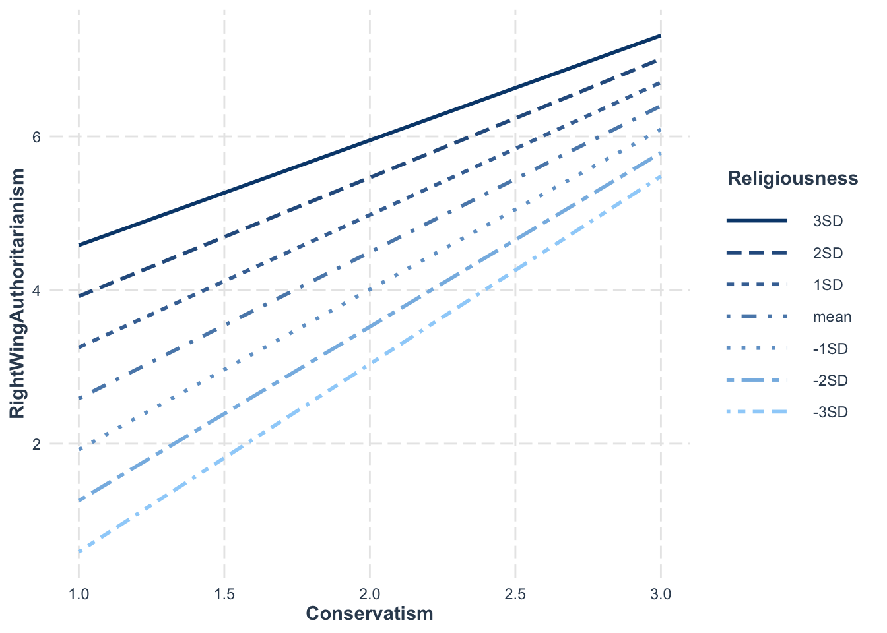
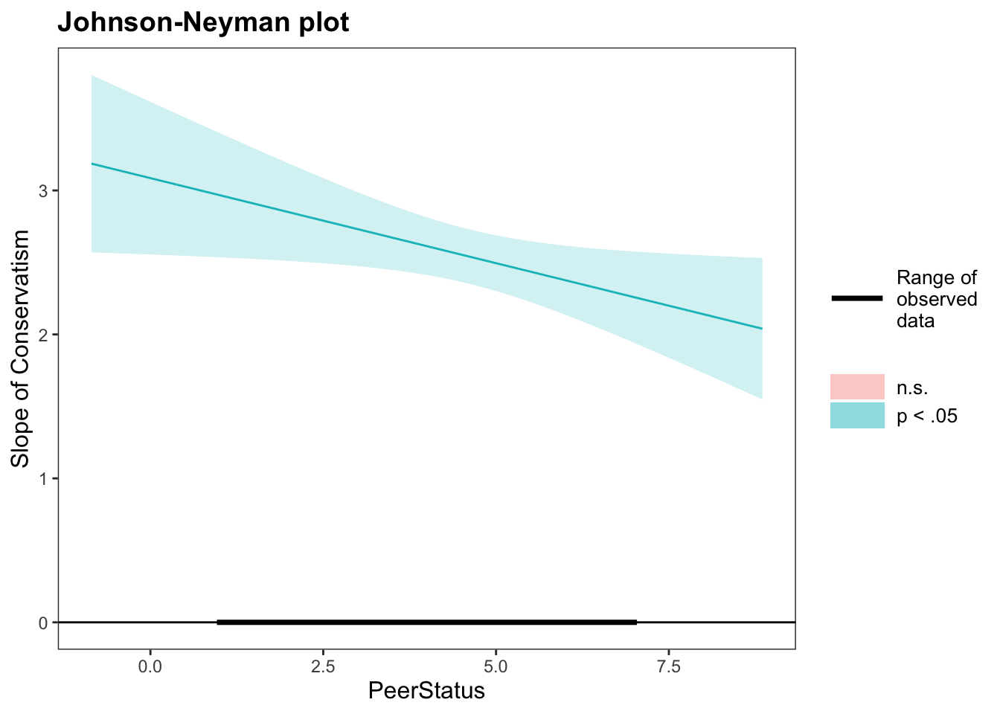

Moderation (also called an interaction effect) occurs when the effect one predictor has on the outcome depends on the value of another predictor in the model. For example, the effect of study time on exam scores might depend on whether a student has a tutor. With a tutor, more study time may strongly boost scores, but without one, the same extra study time might have a weaker effect. This “it depends” relationship between predictors is what we call an interaction.
To test for moderation, we create an interaction term by multiplying two predictors together and adding it to the regression model.
Typically in psychological research, one variable of the interaction is designated as the focal predictor (X) - the focus of the experiment and interpretation. The other predictor is considered the moderator (M). The choice of which variable is the focal predictor or the moderator makes no difference on the outcome, only the interpretation.
A significant interaction term tells us the relationship between the focal predictor and the outcome genuinely changes across levels of the moderator.
The Dataset
For this lesson we continue with the Big 5 personality dataset. The variables of interest are
Conservatism — self report measure of one’s political conservatism (1–5 scale)
RightWingAuthoritarianism — measure on one’s favorability to right wing authoritarianism (1–9 scale)
PeerStatus — self report on one’s perceived status among their peers (1–7 scale)
FamilyNotUnemployed — binary indicator on whether one’s family has employment or not (0 = no employment, 1 = employment)
Immigrant — a biary indicator on whether one’s family comes from immigrants or not (0 = not immigrant, 1 = immigrant)
Religiousness — measure of one’s level of religiousness (1–5 continuous scale)
The focal model of interest is whether the effect of an individual’s political conservatism (Conservatism) on their favorability to right wing authoritarianism (RightWingAuthoritarianism) is moderated by their perceived social status among their peers (PeerStatus). However, we will be exploring other models as well.
1. Creating Interaction Models
Method 1: Creating a Product Variable
One way to create an interaction is to manually create a new variable that is the product of the two predictors.
Call:
lm(formula = RightWingAuthoritarianism ~ Conservatism + PeerStatus +
ConPeer, data = big5)
Residuals:
Min 1Q Median 3Q Max
-3.7494 -0.9595 0.0963 0.8529 5.4545
Coefficients:
Estimate Std. Error t value Pr(>|t|)
(Intercept) -1.66109 0.51353 -3.235 0.00124 **
Conservatism 3.08574 0.27038 11.413 < 2e-16 ***
PeerStatus 0.24530 0.10435 2.351 0.01887 *
ConPeer -0.11817 0.05465 -2.162 0.03076 *
---
Signif. codes: 0 '***' 0.001 '**' 0.01 '*' 0.05 '.' 0.1 ' ' 1
Residual standard error: 1.343 on 1545 degrees of freedom
(1 observation deleted due to missingness)
Multiple R-squared: 0.3126, Adjusted R-squared: 0.3113
F-statistic: 234.2 on 3 and 1545 DF, p-value: < 2.2e-16
IMPORTANT: You MUST include both original variables in the model along with the interaction term. You cannot include ConPeer without also including Conservatism and PeerStatus individually. Leaving out a main effect forces its influence into the interaction term, which will bias your results and make coefficients very difficult to interpret.
Method 2: Using the * Operator in lm()
The cleaner approach is to use the * operator directly in lm(), which includes the main effects automatically.
Call:
lm(formula = RightWingAuthoritarianism ~ Conservatism + PeerStatus +
Conservatism * PeerStatus, data = big5)
Residuals:
Min 1Q Median 3Q Max
-3.7494 -0.9595 0.0963 0.8529 5.4545
Coefficients:
Estimate Std. Error t value Pr(>|t|)
(Intercept) -1.66109 0.51353 -3.235 0.00124 **
Conservatism 3.08574 0.27038 11.413 < 2e-16 ***
PeerStatus 0.24530 0.10435 2.351 0.01887 *
Conservatism:PeerStatus -0.11817 0.05465 -2.162 0.03076 *
---
Signif. codes: 0 '***' 0.001 '**' 0.01 '*' 0.05 '.' 0.1 ' ' 1
Residual standard error: 1.343 on 1545 degrees of freedom
(1 observation deleted due to missingness)
Multiple R-squared: 0.3126, Adjusted R-squared: 0.3113
F-statistic: 234.2 on 3 and 1545 DF, p-value: < 2.2e-16
However, it is generally good practice to include the main effects independently as well.
Which of the above two methods you use depends on how helpful or important it has to save the product as its own independent variable in your dataset. However, many fuctions we will be using require the use of * like in model2 above.
Adding Covariates
To add a covariate that is NOT part of the interaction, simply include it in the model.
Call:
lm(formula = RightWingAuthoritarianism ~ Conservatism + FamilyNotUnemployed +
Conservatism * FamilyNotUnemployed, data = big5)
Residuals:
Min 1Q Median 3Q Max
-3.7770 -0.9713 0.1117 0.8615 5.5557
Coefficients:
Estimate Std. Error t value Pr(>|t|)
(Intercept) -0.6923 0.4744 -1.459 0.145
Conservatism 2.6779 0.2536 10.558 <2e-16 ***
FamilyNotUnemployed 0.1657 0.5146 0.322 0.748
Conservatism:FamilyNotUnemployed -0.1510 0.2743 -0.550 0.582
---
Signif. codes: 0 '***' 0.001 '**' 0.01 '*' 0.05 '.' 0.1 ' ' 1
Residual standard error: 1.346 on 1544 degrees of freedom
(2 observations deleted due to missingness)
Multiple R-squared: 0.3107, Adjusted R-squared: 0.3093
F-statistic: 232 on 3 and 1544 DF, p-value: < 2.2e-16
Multicategorical Moderators
In R, you can add any type of variable as the moderator. For a multicategorical moderator, you will need multiple dummy variables, each interacting with your focal predictor. If you make the moderator a factor class variable, the dummy interactions will be included automatically.
Note there will still be a left-out baseline category. If you want to use other multicategorical coding schemes for the moderator, follow the methods in the Multicategorical Predictors lesson.
2. Interpreting Moderation Models
Coefficients of moderation models follow similar interpretations to what you have learned before, but with some important distinctions. Since we are incorporating the interaction, the conditional effects are conditional on a specific level of the other predictor in the interaction - typically when the moderator equals 0.
b1 is the conditional effect of X when M = 0. It is NOT when M is “held constant.”
The interaction effect is interpreted as the change in the effect of X between two individuals who differ in one unit of M.
Using model1:
Intercept: The average level of favorability of right wing authoritarianism when an individual has no political conservatism and no status among their peers is expected to be -1.66. Note that this doesn’t make sense on the variable’s scale.
Slope of Conservatism: For individuals that have no status among peers, two individuals who differ in political conservatism by one unit are expected to differ by favorability of right wing authoritarianism by about 3.09, with the more conservative individual being more favorable.
Slope of PeerStatus: For individuals that are not political conservatives, two individuals who differ in their self-perceived peer status are expected to differ in favorability of right wing authoritarianism by about .25, with the higher peer status individual being more favorable.
Slope of Interaction: For two people who differ on self-perceived peer status by 1 unit, the conditional effect of political conservatism on favorability of right wing authoritarianism is expected to change by -.118 for the person higher in peer status.
The conditional effects are dependent on the level of the other predictor. We are not controlling for the other predictor in entirety because by including the interaction, we assume the main effects are not constant, so they cannot be “controlled.” Instead, we discuss them at a certain level of the other predictor.
3. Mean Centering
As a final note on interaction effects, it is often said that centering your interaction terms (X and M) at their means can be beneficial. It is a MYTH that this will reduce multicollinearity in the sense of reducing true relationships within the data. However, centering at the mean can be very helpful for interpretations.
Recall how the default conditional effect is when the moderator = 0. This is often nonsensical. Recentering at the mean gives the conditional effect of X at an average M, which is much more intuitive.
“Centering” just means to position your variable with a specific value in the middle by subtracting that value. Let’s recenter both predictors at their means.
Call:
lm(formula = RightWingAuthoritarianism ~ Conservatism_mc + PeerStatus_mc +
Conservatism_mc * PeerStatus_mc, data = big5)
Residuals:
Min 1Q Median 3Q Max
-3.7494 -0.9595 0.0963 0.8529 5.4545
Coefficients:
Estimate Std. Error t value Pr(>|t|)
(Intercept) 4.21643 0.03416 123.434 <2e-16 ***
Conservatism_mc 2.54200 0.09649 26.344 <2e-16 ***
PeerStatus_mc 0.02454 0.01844 1.331 0.1835
Conservatism_mc:PeerStatus_mc -0.11817 0.05465 -2.162 0.0308 *
---
Signif. codes: 0 '***' 0.001 '**' 0.01 '*' 0.05 '.' 0.1 ' ' 1
Residual standard error: 1.343 on 1545 degrees of freedom
(1 observation deleted due to missingness)
Multiple R-squared: 0.3126, Adjusted R-squared: 0.3113
F-statistic: 234.2 on 3 and 1545 DF, p-value: < 2.2e-16
Now the slope of Conservatism_mc can be understood as the conditional effect of political conservatism when an individual has average peer status. This is called a simple effect, which we explore in more detail in the next section.
4. Simple/Conditional Effects
What Are Simple Effects?
When a significant interaction is found, the next step is to unpack it using simple effects analysis. A significant interaction means the effect of X is not constant across levels of M. Simple effects let us describe the relationship of X on Y separately at meaningful levels of the moderator.
For continuous moderators, we typically examine three levels: one standard deviation below the mean, at the mean, and one standard deviation above the mean.
For categorical moderators, we typically assess the simple effects at all levels.
Simple slopes are just: slope of X + (slope of the interaction) * a certain level of M.
Simple Slopes for Categorical Moderators
For dummy coded categorical moderators, all that needs to be done is to change the reference group. The conditional effect of X will naturally be at the reference group.
For dichotomous moderators, there are only two conditional effects. To find the significance of the other slope, just switch the baseline. Switching a 0/1 binary variable is easy. Just do 1 - variable:
Call:
lm(formula = RightWingAuthoritarianism ~ Conservatism + Immigrant +
Conservatism * Immigrant, data = big5)
Residuals:
Min 1Q Median 3Q Max
-3.7012 -0.9593 0.0888 0.8637 5.3543
Coefficients:
Estimate Std. Error t value Pr(>|t|)
(Intercept) -0.6299 0.1939 -3.248 0.00119 **
Conservatism 2.5858 0.1017 25.417 < 2e-16 ***
Immigrant 0.8128 0.6112 1.330 0.18378
Conservatism:Immigrant -0.3822 0.3272 -1.168 0.24296
---
Signif. codes: 0 '***' 0.001 '**' 0.01 '*' 0.05 '.' 0.1 ' ' 1
Residual standard error: 1.345 on 1544 degrees of freedom
(2 observations deleted due to missingness)
Multiple R-squared: 0.3108, Adjusted R-squared: 0.3095
F-statistic: 232.1 on 3 and 1544 DF, p-value: < 2.2e-16
# Switch the baselinebig5$Immigrant2 <-1- big5$Immigrantmodel9 <-lm(RightWingAuthoritarianism ~ Conservatism + Immigrant2 + Conservatism*Immigrant2, data = big5)summary(model9)
Call:
lm(formula = RightWingAuthoritarianism ~ Conservatism + Immigrant2 +
Conservatism * Immigrant2, data = big5)
Residuals:
Min 1Q Median 3Q Max
-3.7012 -0.9593 0.0888 0.8637 5.3543
Coefficients:
Estimate Std. Error t value Pr(>|t|)
(Intercept) 0.1829 0.5796 0.316 0.752
Conservatism 2.2036 0.3110 7.085 2.1e-12 ***
Immigrant2 -0.8128 0.6112 -1.330 0.184
Conservatism:Immigrant2 0.3822 0.3272 1.168 0.243
---
Signif. codes: 0 '***' 0.001 '**' 0.01 '*' 0.05 '.' 0.1 ' ' 1
Residual standard error: 1.345 on 1544 degrees of freedom
(2 observations deleted due to missingness)
Multiple R-squared: 0.3108, Adjusted R-squared: 0.3095
F-statistic: 232.1 on 3 and 1544 DF, p-value: < 2.2e-16
Note how only the slope of Conservatism changes in magnitude. Now this is the simple effect of Conservatism when immigrant status = 1. The interaction term slope changes sign because we changed the reference group.
Simple Slopes for Interval Moderators
For interval moderators (like a Likert scale with discrete levels), use sim_slopes() from the interactions package. Specify the values to probe at in the modx.values argument. The : operator means “through” (e.g., 1:7 means 1 through 7). Make sure you use the model with the interaction calculated from the * operator (model2).
JOHNSON-NEYMAN INTERVAL
When PeerStatus is OUTSIDE the interval [15.82, 236.25], the slope of
Conservatism is p < .05.
Note: The range of observed values of PeerStatus is [1.00, 7.00]
SIMPLE SLOPES ANALYSIS
Slope of Conservatism when PeerStatus = 1:
Est. S.E. t val. p
------ ------ -------- ------
2.97 0.22 13.48 0.00
Slope of Conservatism when PeerStatus = 2:
Est. S.E. t val. p
------ ------ -------- ------
2.85 0.17 16.50 0.00
Slope of Conservatism when PeerStatus = 3:
Est. S.E. t val. p
------ ------ -------- ------
2.73 0.13 20.85 0.00
Slope of Conservatism when PeerStatus = 4:
Est. S.E. t val. p
------ ------ -------- ------
2.61 0.10 25.55 0.00
Slope of Conservatism when PeerStatus = 5:
Est. S.E. t val. p
------ ------ -------- ------
2.49 0.10 25.28 0.00
Slope of Conservatism when PeerStatus = 6:
Est. S.E. t val. p
------ ------ -------- ------
2.38 0.12 19.41 0.00
Slope of Conservatism when PeerStatus = 7:
Est. S.E. t val. p
------ ------ -------- ------
2.26 0.16 13.95 0.00
For confidence intervals (but not p-values), use emtrends() from the emmeans package:
Call:
lm(formula = RightWingAuthoritarianism ~ Conservatism + Religiousness +
Conservatism * Religiousness, data = big5)
Residuals:
Min 1Q Median 3Q Max
-3.7564 -0.8601 0.0767 0.8117 4.6328
Coefficients:
Estimate Std. Error t value Pr(>|t|)
(Intercept) -1.7860 0.5002 -3.571 0.000367 ***
Conservatism 2.4304 0.2807 8.660 < 2e-16 ***
Religiousness 0.8049 0.1573 5.116 3.5e-07 ***
Conservatism:Religiousness -0.1713 0.0832 -2.058 0.039733 *
---
Signif. codes: 0 '***' 0.001 '**' 0.01 '*' 0.05 '.' 0.1 ' ' 1
Residual standard error: 1.264 on 1545 degrees of freedom
(1 observation deleted due to missingness)
Multiple R-squared: 0.3918, Adjusted R-squared: 0.3906
F-statistic: 331.7 on 3 and 1545 DF, p-value: < 2.2e-16
m <-mean(big5$Religiousness)s <-sd(big5$Religiousness)# Using sim_slopes at mean and ±1 sdsim_slopes(model10,pred = Conservatism,modx = Religiousness,modx.values =c(m - s, m, m + s))
JOHNSON-NEYMAN INTERVAL
When Religiousness is OUTSIDE the interval [8.74, 238.24], the slope of
Conservatism is p < .05.
Note: The range of observed values of Religiousness is [1.00, 5.00]
SIMPLE SLOPES ANALYSIS
Slope of Conservatism when Religiousness = 2.017691:
Est. S.E. t val. p
------ ------ -------- ------
2.08 0.14 15.08 0.00
Slope of Conservatism when Religiousness = 3.067817:
Est. S.E. t val. p
------ ------ -------- ------
1.91 0.10 18.72 0.00
Slope of Conservatism when Religiousness = 4.117943:
Est. S.E. t val. p
------ ------ -------- ------
1.73 0.13 13.28 0.00
You can also recenter the moderator at a specific value directly in lm() using the I() function:
# Conditional effect at +1 sd above the meanmodel11 <-lm(RightWingAuthoritarianism ~ Conservatism +I(Religiousness - (m + s)) + Conservatism *I(Religiousness - (m + s)), data = big5)summary(model11)
Plotting interactions is an easy way to visualize what the moderation looks like. It can also give a quick idea of whether an interaction exists and at what levels of the moderator it is present. However, plots are not a foolproof way of demonstrating interactions. You should always rely on the significance tests first.
There’s many, many ways you can plot these interactions. I will go over a few methods.
gf_point() from ggformula
gf_point() works well for discrete or factor moderators, though it can’t handle continuous moderators very well. The moderator must be a factor class variable for the color grouping to work properly. Make sure you have the dplyr package loaded in order to use the %>% operator.
gf_point(RightWingAuthoritarianism ~ Conservatism, data = big5, color =~factor(PeerStatus)) %>%# specify the factor heregf_lm()

Each group is separated by color and each simple effect is represented by a different color slope. This plot shows why the conditional effect of Conservatism was significant at every level of PeerStatus even though the interaction was significant. The effect is present across all levels, but the slopes differ in magnitude from level to level.
Here is an example of a non-significant interaction for comparison:
gf_point(RightWingAuthoritarianism ~ Conservatism, data = big5, color =~factor(FamilyNotUnemployed)) %>%gf_lm()

The slopes are very similar to each other, meaning the conditional effect of Conservatism did not depend on the family employment variable.
If you need help with these, AI is really good at doing plots these days if you know what to describe.
interact_plot() from the interactions Package
interact_plot() from the interactions package handles continuous moderators more easily. If your moderator is interval, you need to specify what the levels are in the modx.values argument. Make sure your moderator is calculatied using the * operator in your lm() function.
For continuous moderators, the default is mean and ±1 sd:
interact_plot(model = model10, pred = Conservatism, modx = Religiousness, data = big5)

To check more SD levels, manually calculate them:
m <-mean(big5$Religiousness) # means <-sd(big5$Religiousness) # standard deviationmod_levels <-c((m -3*s), # -3sd below mean (m -2*s), # -2sd below mean (m - s), # -1sd below mean m, # the mean (m + s), # +1sd below mean (m +2*s), # +2sd below mean (m +3*s)) # +3sd below mean# It isn't necessary, but it helps to label your interaction levels using modx.labelsinteract_plot(model = model10, pred = Conservatism, modx = Religiousness,modx.values = mod_levels,modx.labels =c("-3SD", "-2SD", "-1SD", "mean", "1SD", "2SD", "3SD"),data = big5)

Looking at this plot, it seems there is a difference in slope for -3sd and +3sd, albeit not by much. This makes sense since the interaction was barely significant. Knowing the strength of an effect from the significance tests helps you correctly interpret what the plot is showing you.
6. Simple Effect Probing
What Is Probing?
“Probing” refers to picking specific values of the moderator to test where the significance of an interaction comes from. A significant interaction tells us the conditional effect of X is not consistent across M, but it does not tell us where in M it is not consistent.
Pick a Point Probing
Pick a point probing involves figuring out specific values of the moderator that would be of interest, either based on theory, natural scale values, or the mean and ±1 SD. There is nothing new to this method. It is just centering your moderator at the desired value as discussed in previous sections.
The points you probe can be due to previously established theory (e.g., we expect the average peer status person to behave differently than those with high or low status) or natural reasons (e.g., it’s likely that the extremes of peer status probably have differing effects than each other, so we should check those).
Generally, this is the recommended approach.
Johnson-Neyman Approach
The Johnson-Neyman method uses analytical math that scans across the moderator data to find points where the conditional effect of X switches from non-significant to significant. Imagine it like a helicopter spotlight sweep rather than a private eye detective.
The method produces no values, one value, or two values of the moderator where the focal predictor switches significance. These values are called transition points.
You can get this automatically with sim_slopes(). When you do not specify modx.values, it uses the Johnson-Neyman method by default (note, you need to have a interaction via * to use this function):
JOHNSON-NEYMAN INTERVAL
When PeerStatus is OUTSIDE the interval [15.82, 236.25], the slope of
Conservatism is p < .05.
Note: The range of observed values of PeerStatus is [1.00, 7.00]
SIMPLE SLOPES ANALYSIS
Slope of Conservatism when PeerStatus = 2.747299 (- 1 SD):
Est. S.E. t val. p
------ ------ -------- ------
2.76 0.14 19.62 0.00
Slope of Conservatism when PeerStatus = 4.601033 (Mean):
Est. S.E. t val. p
------ ------ -------- ------
2.54 0.10 26.34 0.00
Slope of Conservatism when PeerStatus = 6.454767 (+ 1 SD):
Est. S.E. t val. p
------ ------ -------- ------
2.32 0.14 16.70 0.00
The output will tell you whether there were any transition points within the observed range of the moderator. In this example, since the conditional effect of Conservatism was significant at every level of PeerStatus, there were no transition points within the observed range.
AKA - If no values turn up: The conditional effect of X is consistently significant/non-significant across all values of M. - If one value turns up: The conditional effect of X is non-significant above/below M and significant below/above M (one or the other). - If two values turn up: The conditional effect is either significant between the two values of M or it is non-significant between those two values.
You can also use the johnson_neyman() function from the interactions package too (also use a function with * interaction specification). This function gives you a plot that shows you where significance happens.
johnson_neyman(model2, pred ="Conservatism", modx ="PeerStatus")
JOHNSON-NEYMAN INTERVAL
When PeerStatus is OUTSIDE the interval [15.82, 236.25], the slope of
Conservatism is p < .05.
Note: The range of observed values of PeerStatus is [1.00, 7.00]

What this plot means is that across the range of observed PeerStatus (1-7), every slope of Conservatism is significant. If some values of PeerStatus were not significant, they’d appear as a red line and red area. This means that we got the “no values turn up” scenario above. The focal predictor was significant across all values of the moderator.
In general, its better to use theory for why you are looking at specific values of the moderator. It’s possible the conditional effect of X is significant at multiple levels of M. The Johnson-Neyman approach might miss the more interesting or theoretically noteworthy levels by putting emphasis on other values of M. It also doesn’t show you the different strengths of effects, rather just if they are significant or not. That is, even if multiple points of M have a significant X, that does not mean that they meaningfully differ from one another (keep in mind, you can have a significant interaction with ALL levels of the moderator being significant).
Well Done!
You have completed the Moderation and Interaction Effects tutorial. Here is a summary of what was covered:
Creating interaction models with product variables and the * operator in lm()
Interpreting main effects and interaction coefficients in moderation models
Mean centering predictors for more interpretable conditional effects
Getting simple slopes for categorical, interval, and continuous moderators
Plotting interactions with gf_point() and interact_plot()